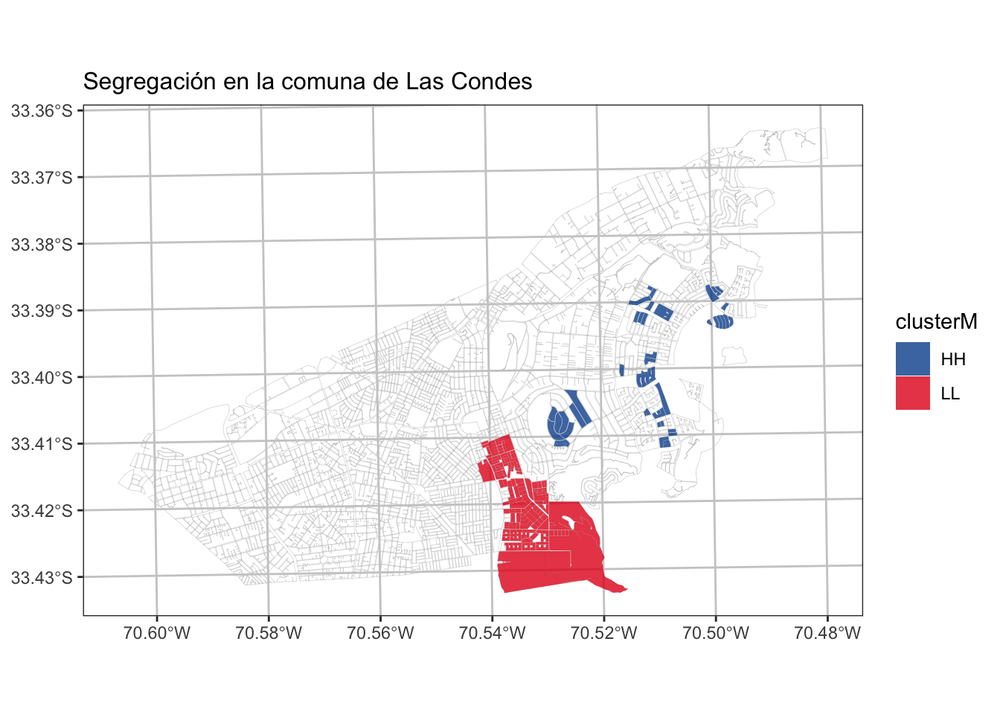

Tarea 2
Inferencia y Autocorrelación Espacial
Antecedentes
- Fecha de entrega: 23 de Noviembre 2022
- Formato: Informe (pdf o html) + Código (.r o .rmd)
- Integrantes: 1
Instrucciones
Parte 1: Interpolación de Inverso a la Distancia Poderada.

- Defina un área de estudio Urbana (no la comunas vistas en clases)
- Realice 3 calculos de interpolación de Inverso a al Distancia (IDW) con los datos del SII correspodiente a comercio, oficina y atractor. (1.5 pt)
- Calcule un indicador de territorial por cada uno de los resultados de las IDW del punto anterio y visualice los los resultados. (1.5 pt)
Parte 2: Autocorrelación espacial.
Defina un área de estudio Urbana (no la comunas vistas en clases) y visualice una variable que usted decida evaluar su autocorrelación espacial (Ej: Nivel Educacional). Justifique la selwcción de variable a modo de hipótesis. (1 pt)
Genere una Matriz de Vecidad ponderada por la variable que usted encuentre idónea (Ej: Población) (1 pt)
Cálculo de índice de Moran (global) y visualice sus resultados en gráfico de cuadrantes. Interprete los resultados de forma general. (1 pt)
Cálculo de índice de local Moran e identifique los grupos o cluster haciendo uso de los resultados significancia estadística, visualice los resultados en un Mapa e Interprete los resultados de forma general. (1 pt)
